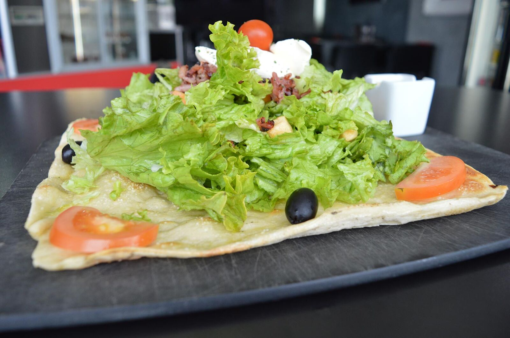
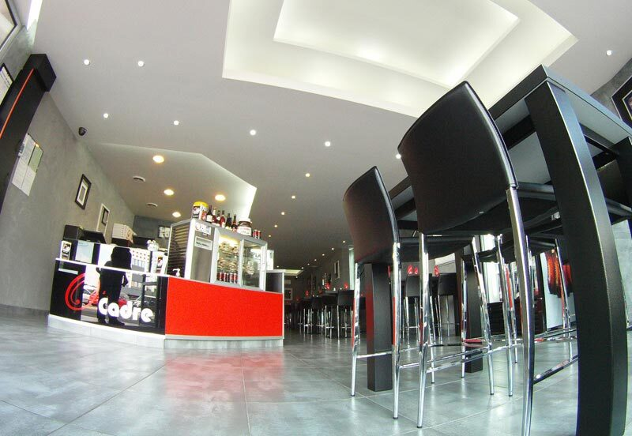
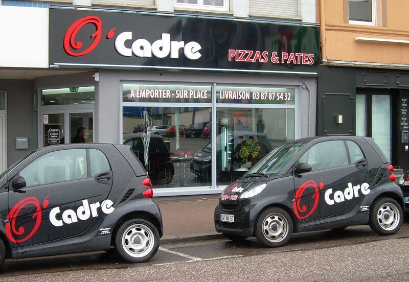

Forbach
Sur place · Livraison40 rue Nationale, 57600 Forbach
Fermé le dimanche midi

Pizzas carrées, flamms, pâtes fraîches et raviolis faits maison, élaborés sur place depuis 2008. Sur place, à emporter ou livrés chez vous en moins de temps qu'il n'en faut pour choisir votre garniture.
40 rue Nationale, 57600 Forbach
Fermé le dimanche midi
34 rue Nationale, 57800 Betting
Fermé le samedi midi et le dimanche midi
Secteur Saint-Avold
Fermé le samedi midi et le dimanche midi
Un vaste choix de pizzas, flamms, spécialités italiennes, pâtes et raviolis frais, avec un large choix de sauces et de fromages. Mais aussi de belles salades composées et des desserts gourmands.

En pâte fine ou pâte épaisse, et surtout carrées : plus de surface, plus de garniture. Il y en a pour tous les goûts.
Commander
Parce que tout est fait maison, composez vos pâtes à l'italienne : choisissez les pâtes, la sauce et le fromage qui vous font envie.
Commander
Lardons, saumon ou champignons, nos raviolis « maison » s'accompagnent de la sauce et du fromage de votre choix.
Commander
Arancinis et lasagnes faits maison pour élargir votre choix. Testez-les, vous allez vous régaler !
Commander
Vosgienne, Océane, Niçoise, Poulet, Saumon… des salades fraîcheur réalisées à partir de produits frais.
Commander
Pizza sucrée, tiramisu Nutella, glaces Ben & Jerry's : terminez votre repas sur une note gourmande.
Commander
Une exclusivité chez O'Cadre : des pizzas carrées avec une surface plus grande, qui vous garantit plus de quantité que sur des pizzas rondes classiques. Tous nos produits sont frais, cuisinés sur place et faits maison. C'est ça, la différence !
Pizzas, flamms, pâtes et raviolis frais faits maison, salades composées et desserts gourmands.
Des restaurants au design moderne et chaleureux, pour manger sur place, emporter ou se faire livrer.
Plusieurs équipes à votre service, en restaurant comme en livraison. Notre réactivité garantit des livraisons dans les délais.
Des pizzas carrées, plus généreuses, et des produits frais cuisinés sur place : rien n'est sous-traité.
Sur place dans un cadre moderne et chaleureux, à emporter au comptoir ou livré chez vous : choisissez votre secteur.
Pizzeria O'Cadre : ouvert tous les jours fériés le soir.
Sur 42 avis déposés par nos clients. Votre satisfaction continuelle est notre devise.
Depuis notre retour sur Forbach, nous avons mangé toute une semaine, midi et soir chez eux. Propre, professionnel, et surtout toujours un mot gentil. Produits de très bonne qualité. Aujourd'hui, j'ai fait livrer : au top !Claudia H.
Après avoir goûté la pizza Nutella Banane de Betting, j'ai essayé toutes les pizzas Nutella des pizzerias du coin. Aucune n'arrive à la cheville de celle du O'Cadre.Aimé J.
Super service, délai de livraison respecté, pizza très très très bonne, vraiment une dinguerie… Je recommande à 100 000 %.Aïcha
Pas de compte à créer : parcourez la carte, composez vos pizzas et vos pâtes (pâte, sauces, fromages), choisissez votre créneau et confirmez. Trois minutes, montre en main.
Tapez votre code postal : on vous rattache au bon restaurant, livraison ou à emporter.
Pâte fine ou épaisse, sauces, fromages, quantités : la carte complète avec les prix, sans inscription.
Choisissez l'heure de livraison ou de retrait et confirmez par SMS ou par téléphone.

Pour chaque événement, O'Cadre vous propose ses solutions. Faites-nous part de vos envies, nous mettons tout en œuvre pour vous satisfaire.